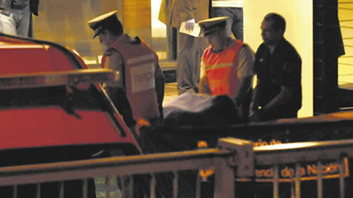

Real Chubut - Agencia de Noticias


Un monumento a la mentira

Pese a la ausencia de pruebas, y en sintonía con los intereses del macrismo y las derechas de EE.UU. e Israel, avanzan las causas sobre el Memorándum con Irán y el supuesto asesinato del fiscal.
Transcurridos cuatro años, la denuncia de Alberto Nisman y la muerte del fiscal siguen siendo punta de lanza política y judicial, falseando lo que dicen los hechos que fueron apareciendo todavía más en estos 48 meses. En Comodoro Py ya elevaron a juicio la descabellada causa por el Memorándum de Entendimiento con Irán, un tratado que fue aprobado por ambas cámaras del Congreso y que nunca entró en vigencia. Para seguir adelante con la acusación por encubrimiento contra Cristina Fernández de Kirchner tuvieron que recurrir a una maniobra insólita: evitaron que declare en el expediente el protagonista clave de la historia, el ex titular de Interpol Ronald Noble, quien desde el primer día sostuvo que “la denuncia de Nisman es falsa”. En paralelo, también Comodoro Py avanza en la causa por la muerte de Nisman. En cuatro años no encontraron ni un supuesto comando, ni siquiera un sospechoso, al que puedan adjudicarle que entró o salió del edificio Le Parc y mucho menos que accediera al departamento en el que vivía el fiscal. En la escena no había ni desorden ni rastro de pelea alguna que sugiriera la posibilidad de un homicidio. Pese a semejante orfandad de prueba, los dos expedientes son la base de la utilización política por parte de las derechas de Estados Unidos e Israel y por parte del gobierno de Mauricio Macri.
Monumento
Curiosamente, el único homenaje de relevancia que se le hará hoy a Nisman será en Israel, que tomó al fiscal como una especie de emblema en la ofensiva contra Irán. Hacia Jerusalem viajaron el presidente de la DAIA, Jorge Knoblovits, el de la AMIA, Agustín Zbar, y la madre del fiscal, Sara Garfunkel, para estar presentes en la inauguración de un monumento en el bosque de la amistad Israel-Argentina. La ceremonia será encabezada por el presidente del Parlamento israelí, Yuli Edelstein.
En los últimos días, el gobierno del estado hebreo se deshizo en elogios sobre Nisman, en fuerte contradicción con lo que opinan los familiares de las víctimas del atentado, quienes reiteraron ahora lo que decían en vida del fiscal: que trabajaba poco, que viajaba mucho, que utilizó para su beneficio el dinero de la fiscalía AMIA y que recibió dinero en negro de países extranjeros.
En síntesis, el trabajo del fiscal resultó controvertido y antes de su muerte los familiares de las víctimas venían reclamando que fuera apartado de la investigación. También antes de su deceso se produjo la filtración de los cables de Wikileaks, en los que quedó evidenciado que Nisman concurría asiduamente a la Embajada de Estados Unidos en Buenos Aires, les adelantaba cada paso de la investigación, les consultaba los escritos y hasta les pedía disculpas cuando hacía una presentación sin advertirles antes. Es decir, se percibió que Nisman tenía una dependencia política tanto de los servicios de inteligencia de Estados Unidos como de los de Israel. Por ello, se opuso en el final al Memorándum con Irán.
Todo indica que ese alineamiento geopolítico es la razón por la que hoy el gobierno de Israel lo sube al pedestal.
Denuncia
El capítulo final de la vida de Nisman se centró en la denuncia contra el gobierno de CFK por el Memorándum. Es casi seguro que también allí estuvo la clave de su derrumbe, porque en apenas tres días –entre el 14 de enero y el 17 de enero de 2015– la denuncia fue virtualmente arrasada. La jueza de feria, María Romilda Servini de Cubría, rechazó tratar la presentación del fiscal sosteniendo que no aportaba las pruebas. El juez Ariel Lijo estuvo de acuerdo con Servini y el juez Rodolfo Canicoba Corral sostuvo que no sólo la denuncia no tenía entidad probatoria sino que había que investigar a Nisman por trabajar un tema por dos años, sin ningún control judicial.
Sin embargo, la respuesta más rotunda provino del gobierno de CFK, ya que el fallecido canciller Héctor Timerman mostró las pruebas que indicaban que nunca se benefició a los sospechosos iraníes y que, por el contrario, se le exigió a Interpol que no hubiera ninguna modificación en las órdenes de captura. A eso se sumó luego una lapidaria intervención del estadounidense Ronald Noble, ex titular de Interpol, quien certificó que el gobierno argentino siempre se mantuvo férreo en que debían sostenerse las órdenes de captura con alertas rojas.
Al mismo tiempo quedaron en claro algunos de los papelones del texto del fiscal. Nisman hablaba de que el Memorándum se firmaba para dar lugar a un intercambio de petróleo iraní por cereales argentinos, algo que resultó falso, al punto de que las refinerías argentinas no pueden tratar el petróleo iraní que tiene demasiado azufre. El fiscal ponía como clave a un supuesto espía de La Cámpora, Allan Bogado, al que ubicaba en las negociaciones con los iraníes en Nueva York y Zurich. Resultó que Bogado ni era espía ni era de La Cámpora ni había salido del país. Nisman habló de que se le echaría la culpa del atentado contra la AMIA a nazis argentinos, algo que no se verificó tampoco.
Después de un rechazo en todas las instancias, la causa del Memorándum fue reabierta por el aparato de Comodoro Py, que armó un expediente paralelo y acusó a Cristina Kirchner, Timerman y otros dirigentes de traición a la patria. En la instrucción, se eludió la convocatoria del protagonista clave, Ronald Noble, quien pidió declarar pero el juzgado eludió el llamado porque el norteamericano hubiera terminado de destrozar la acusación.
Hoy, sin embargo, la causa está elevada a juicio, con prácticamente todos los juristas del país –Julio Maier, León Arslanián, Raúl Zaffaroni, Ricardo Gil Lavedra– considerando que la imputación es política, no penal.
Muerte
La otra causa que se utiliza como ariete político es la referida a la muerte del fiscal. En los cuatro años transcurridos, la hipótesis del homicidio se fue diluyendo, aunque el gobierno de Cambiemos y el aparato de Comodoro Py tratan de darle aliento basándose en una pericia de la Gendarmería, fuerza que responde al mando de Patricia Bullrich.
En cuatro años no pudieron encontrar un sospechoso de haber entrado al edificio Le Parc ni al departamento de Nisman ni mucho menos al baño donde apareció el cuerpo. Todos los indicios confirman que, además, el departamento estaba cerrado por dentro y que la cabeza de Nisman impedía la apertura de la puerta del baño, algo imposible de arreglar por supuestos sicarios desde afuera de ese baño.
Al revés de lo que trataron de difundir, había “partículas consistentes con disparo de arma de fuego” en las manos del fiscal; el disparo fue en la sien, lugar habitual de los suicidas; el departamento estaba ordenado, sin evidencia de una pelea para dominar a Nisman, y no se encontró una gota de sangre fuera del baño.
El libro de Pablo Duggan Quién mató a Nisman describe los últimos dos días del fiscal: no salió del departamento, bajó las cortinas, no se vistió más. Su hombre de referencia, el ex jefe de la SIDE Jaime Stiuso, no le contestó el teléfono; su referente internacional, Noble, le dio la espalda, y en semejante soledad tenía que ir al Congreso a defender una denuncia que hacía agua.
Es obvio que afrontaba la posibilidad cierta de ser echado de la fiscalía, como pedían los familiares, perder poder, dinero, la vida lujosa que llevaba e incluso podía descubrirse –como después ocurrió– la enorme fortuna oculta que había acumulado. A todo esto se sumó un duro choque con su ex pareja, Sandra Arroyo Salgado, a quien le escribió por WhatsApp “estoy hecho mierda”, mientras la jueza lo increpaba por dejar a su hija sola en el aeropuerto de Madrid y mezclarse con modelos a las que les pagaba.
El pedido del arma a su empleado Diego Lagomarsino, después de haber fracasado en el intento de que uno de sus custodios le proveyera una pistola, indican que se quitó la vida. Lo mismo surge de su última navegación en la computadora, con la lectura final de una nota de Infobae, firmada por Claudio María Domínguez, sobre el regreso de la muerte.
Pese a todas las evidencias, el expediente se sigue usando como ariete político. En Comodoro Py y en la Casa Rosada no se bajan de la hipótesis del comando iraní-venezolano-kirchnerista, extraordinariamente sofisticado al punto de que nadie lo vio entrar ni salir ni se encontró prueba alguna, aunque al mismo tiempo se trata de un comando tan torpe que usó un arma vieja, con proyectiles comprados 14 años antes y registrada oficialmente a nombre de Lagomarsino. Caso inédito en la historia.
Es evidente que las pruebas y los hechos no interesan. Lo que importa es el uso político-judicial-electoral, como ocurrió en Brasil con el encarcelamiento de Lula.
Fuente: Pagina 12